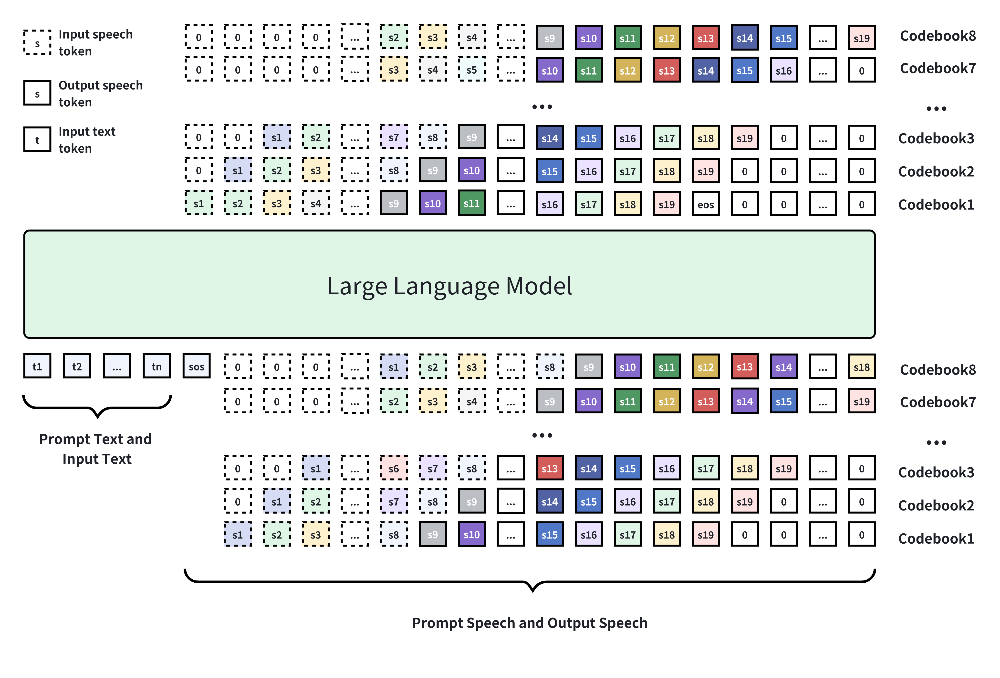
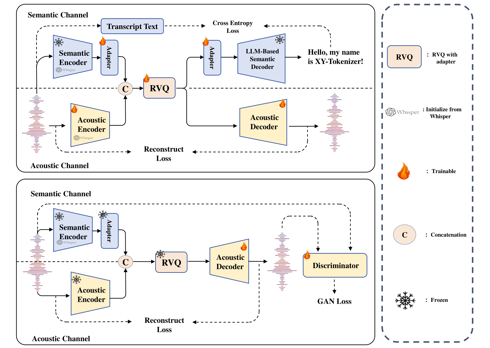
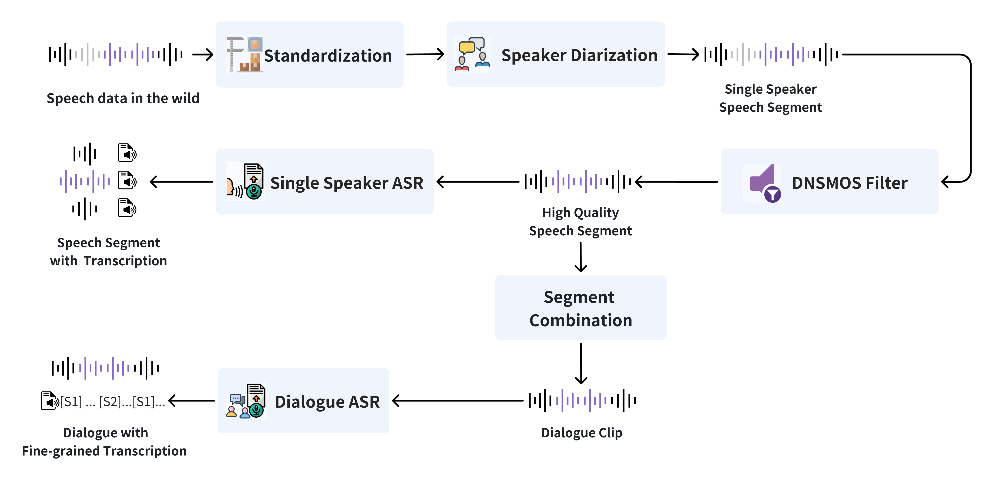

MOSS-TTSD 是一个口语对话语音生成模型，实现了中英双语的高表现力对话语音生成，支持零样本多说话人音色克隆，声音事件控制以及长语音生成。
语音是人类之间交互和人机之间交互的重要接口，拟人程度高，表现力强，韵律自然的语音是强人工智能的必备能力。 然而，在现实世界中，复杂的情境对于语音的特性提出了不同的要求。 通常，在不同的情境下，语音的韵律，风格等特性都会发生变化。 对话语音是现实世界中最常见的一种情境，我们所熟悉的许多声音内容都是对话的形式存在的，例如播客，访谈，体育解说，新闻报道，电商直播等。 在对话中，单一说话人语音的声学特点需要参考整个对话历史和具体的对话语境，这对于生成模型的建模能力提出了新的要求。 虽然当前的TTS模型在单句语音生成上已经取得了显著的进展，但是由于缺乏整体的对话情境，这些TTS模型仍然无法合成高质量的对话语音。
为了解决这个问题，我们构建了一个对话语音合成模型 MOSS-TTSD (Text to Spoken Dialogue)，它能够根据输入的多说话人对话文本，直接生成高质量的对话语音，准确建模对话中的韵律，语调等特性。 MOSS-TTSD 基于 Qwen3-1.7B-base 模型进行继续训练，采用离散化的语音序列建模方法，在约一百万小时单说话人语音数据和四十万小时对话语音数据上进行训练，支持中英双语的语音合成。 得益于低比特率 Codec 和高效数据处理 Pipeline， MOSS-TTSD 在海量真实数据上进行了训练，声音自然程度和表现力都达到了业界领先水平，支持双说话人的音色克隆以及长语音生成。
MOSS-TTSD-V0 的模型权重，推理代码和 API 接口已经全部开源并支持商用：https://github.com/OpenMOSS/MOSS-TTSD
欢迎体验！

MOSS-TTSD 使用完全离散化的方式进行语音生成。我们训练了一个8层 RVQ 的音频 Codec：XY-Tokenizer，来对原始音频进行量化。
XY-Tokenizer 能够同时编码语音的语义和声学信息，并具有较低的比特率（1kbps），这使得LLM能够有效地学习音频序列并建模细节声学特征。
在序列建模方面，受到 MusicGen
为了统一建模语音的语义和声学信息，并实现低比特率，我们构建了 XY-Tokenizer，它使用了双路 Whisper Encoder 进行语音编码，8层 RVQ 量化，两阶段多任务学习的方式进行训练。实现了 1kbps 的比特率和 12.5Hz 的帧率。

我们扩展了Codec训练的数据量，使用了10万小时带有转录文本的语音数据进行训练。下表对比了在LibriSpeech测试集上不同 Codec 在语义和声学性能上的表现。WER为ASR探测任务中的词错误率，WER越低表示语音 token 的语义信息与文本对齐程度更好
| Model | BPS | Frame Rate | Semantic | Acoustic | ||||
|---|---|---|---|---|---|---|---|---|
| Model Semantic | WER ↓ | SIM ↑ | STOI ↑ | PESQ-NB ↑ | PESQ-WB ↑ | |||
| DAC-8 | 6k | 75 | No | 0.74 | 0.88 | 0.95 | 3.79 | 3.46 |
| SpeechTokenizer | 4k | 50 | Yes | 0.20 | 0.84 | 0.92 | 3.05 | 2.60 |
| Mimi-32 | 4.4k | 12.5 | Yes | 0.28 | 0.93 | 0.96 | 3.79 | 3.42 |
| DAC-2 | 1.5k | 75 | No | 0.98 | 0.49 | 0.83 | 1.91 | 1.51 |
| BigCodec | 1.04k | 80 | No | 0.49 | 0.84 | 0.93 | 3.26 | 2.68 |
| Mimi-8 | 1.1k | 12.5 | Yes | 0.28 | 0.73 | 0.90 | 2.79 | 2.24 |
| Baichuan | 1.075k | 12.5 | Yes | 0.10 | 0.70 | 0.88 | 2.45 | 1.93 |
| XCodec2.0 | 0.8k | 50 | Yes | 0.30 | 0.82 | 0.91 | 3.03 | 2.43 |
| XY-Tokenizer | 1k | 12.5 | Yes | 0.13 | 0.83 | 0.91 | 3.00 | 2.41 |
为了更好地编码和重建复杂的对话音频，我们扩展了50万小时无转录音频数据进行增强训练，扩展 Codec 对于复杂音频和场景的处理能力。
得益于Codec的超低比特率，我们模型的训练长度最长达到了960s的音频，这使得我们的模型可以一次性地生成超长的语音，避免了拼接语音片段之间的不自然过渡。
TTS 模型的性能与训练数据的质量和数量有着密切的关系，为了规模化高质量 TTS 数据和 TTSD 数据，我们设计了高效的数据处理流水线，可以从海量原始音频中准确筛选出单人语音和多人对话语音并进行标注。

对于原始音频，我们首先使用内部的说话人分离模型进行语音分段和说话人标注。 基于预训练基模，我们的说话人分离模型性能已经优于开源说话人分离模型 pyannote-speaker-diarization-3.1 及其商用版本 pyannoteAI 。
| Model | AISHELL-4 | AliMeeting(channel 1) | AMI(IHM) | AMI(SDM) |
|---|---|---|---|---|
| DER ↓ | ||||
| pyannote-speaker-diarization-3.1 | 11.7 | 24.7 | 20.5 | 24.3 |
| pyannoteAI | 11.1 | 18.3 | 17.5 | 20.0 |
| Ours Diarization Model | 9.7 | 14.1 | 14.5 | 17.2 |
我们使用 DNSMOS 分数来作为语音质量的评估标准，我们假设 DNSMOS 分数高的语音大概率不包含背景噪声。
为了保证语音的质量和较少的噪声，我们只保留 DNSMOS >=2.8的语音片段。
对于高质量的音频片段，我们直接对语音进行转录，作为 TTS 训练数据。
此外，我们设计了一套规则来将 Diarization 分离的语音片段组合成双人对话的片段用作 TTSD 训练，这样得到的对话片段我们称之为粗粒度对话片段。
虽然说话人分离模型能够较准确地分离说话人，但是我们发现它对一些较短的 Backchannel 不是特别敏感，存在漏分离的情况。
此外，当前的 ASR 模型无法准确地转录对话中重叠的语音。
因此，受 Parakeet
| Model | WER ↓ | CER ↓ | WER(Norm) ↓ | CER(Norm) ↓ |
|---|---|---|---|---|
| Seed-TTS | 2.25 | 1.12 | N/A | N/A |
| Cosyvoice2 | 2.80 | 1.59 | 2.52 | 0.80 |
| SparkTTS | 1.99 | 2.12 | 1.69 | 1.44 |
| MOSS TTS-base | 1.90 | 1.56 | 1.54 | 0.82 |
我们使用了110万小时的中英文 TTS 数据对模型进行了预训练，大规模的 TTS 预训练可以显著增强 TTSD 模型的语音韵律和表现力，并提升模型泛化能力。
我们使用了 Seed-tts-eval
最终，我们收集了10万小时中文对话数据和27万小时英文对话数据。 此外，为了增强模型的说话人切换准确率，我们合成了4万小时中文对话数据和4万小时英文对话数据。 为了增强模型对于中文标点符号的感知能力，我们使用 Gemini 对部分数据（约7万小时）中的转录文本进行了修正。
在训练阶段，我们基于 TTS 预训练的检查点，使用 WSD Scheduler 进行训练，我们没有针对 Decay 阶段做特殊的数据规划。 此外，我们发现无法通过验证集挑选表现最好的检查点，因此我们通过人工评估的方式挑选了主观表现最好的检查点。
MOSS-TTSD 具备多样的生成形式，包括支持上传一整个对话片段或单个说话人音频来进行音色克隆。
这里，我们测试了 MOSS-TTSD 的中文和英文对话生成能力。
对于中文对话生成，我们对比了开源模型 MoonCast
| Topic | Prompt1 | Prompt2 | MoonCast | MOSS-TTSD-v0 |
|---|---|---|---|---|
| 情境学习讨论 | ||||
| 游戏讨论 | ||||
| Asteroid TTS Talk |
| Topic | Prompt1 | Prompt2 | MoonCast | MOSS-TTSD-v0 |
|---|---|---|---|---|
| 贾玲 x 刘德华 | ||||
| 潘长江 x 嘎子 | ||||
| 邓紫棋 x 周杰伦 | ||||
| Elon x Jensen | ||||
| Trump x Obama |
我们基于近期AI领域的热点新闻，生成了一系列AI信息播客。 通过对比豆包（商业模型）的播客生成与我们的开源工作流程，可以发现两者在多个维度上表现相当。 无论是情感的丰富度、语气的自然度，还是整体的表现力，我们的开源模型都展现出与商业解决方案相媲美的性能水平。 这展现了 MOSS-TTSD 在语音合成领域的巨大潜力。
| Date | Doubao Podcast | MOSS-TTSD-v0 |
|---|---|---|
|
2025.06.17 |
||
|
2025.06.18 |
||
|
2025.06.19 |
| Category | Transcription | MOSS-TTSD-v0 |
|---|---|---|
|
Cough |
[S1]今晚你来吗? | |
|
Laugh |
[S1]哎你看见刚才那人的帽子没? |
TTSD Training: Yuqian Zhang, Donghua Yu, Zhengyuan Lin, Yiwei Zhao, Jun Zhan, Dong Zhang
TTS Pretraining: Botian Jiang, Yiwei Zhao, Jin Wang, Yucheng Yuan, Xin Zhang
Foundation Model Pretraining: Xingjian Zhao, Zhe Xu, Hanfu Chen, Yang Wang, Yaozhou Jiang, Ruiming Wang, Cheng Chang
Codec: Yitian Gong, Ruifan Deng, Luozhijie Jin, Qinghui Gao, Dong Zhang
Infrastructure: Ruixiao Li, Mingshu Chen, Cheng Chang
Data Pipeline: Ke Chen, Wenbo Zhang, Wenxuan Wang
Data Collection: Qinghui Gao, Zhengyuan Lin, Donghua Yu, Yuqian Zhang, Zhaoye Fei
Additional Contribution: Qian Tu, Chenchen Yang, Liwei Fan, Kexin Huang
Supervision: Qinyuan Cheng, Zhaoye Fei, Shimin Li, Xipeng Qiu